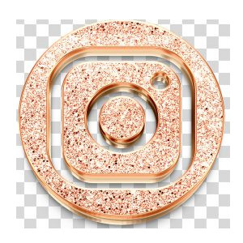

Site favicon.cc
favicon.io ou imoji
IconArchive
Eu moro na
Eu moro na rua Josè da cunha pontes 66 São Paulo
Minha terra tem palmeiras!!
Eu moro na rua Josè da cunha pontes 66 São Paulo
Este e apenas uma frase de exemplo como usar o marca texto
Texto com
Obs todas tang em cor vinho esta desapresiada
Podemos marcar um texto com excluido para indicar que ele deve ser,
mais não considerado
Podemos marcar um texto como inserido para dar uma ênfase e indicar que ele foi adicionado depois
Existe a tang U para Sublinhar porem (nâo semântica)
Texto sobrescrito x2+5(exemplo 2 ao quadrado
Texto subrescrito (exemplo H2O